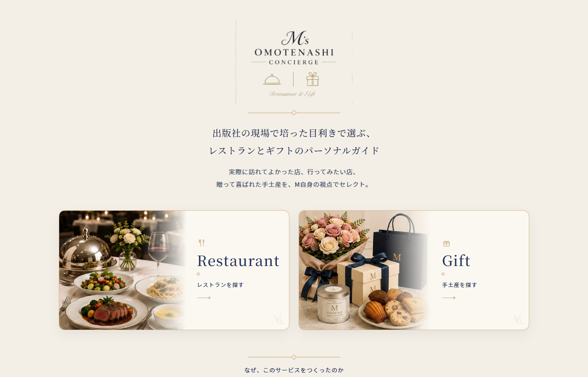
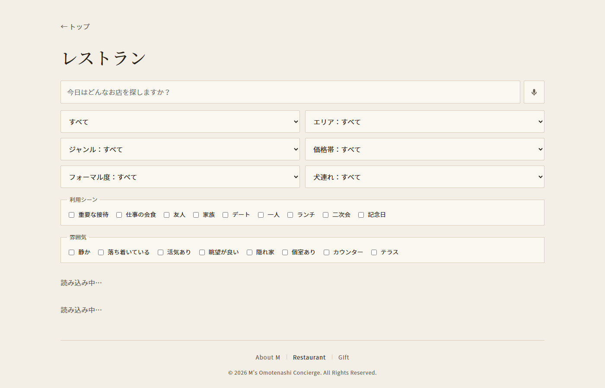
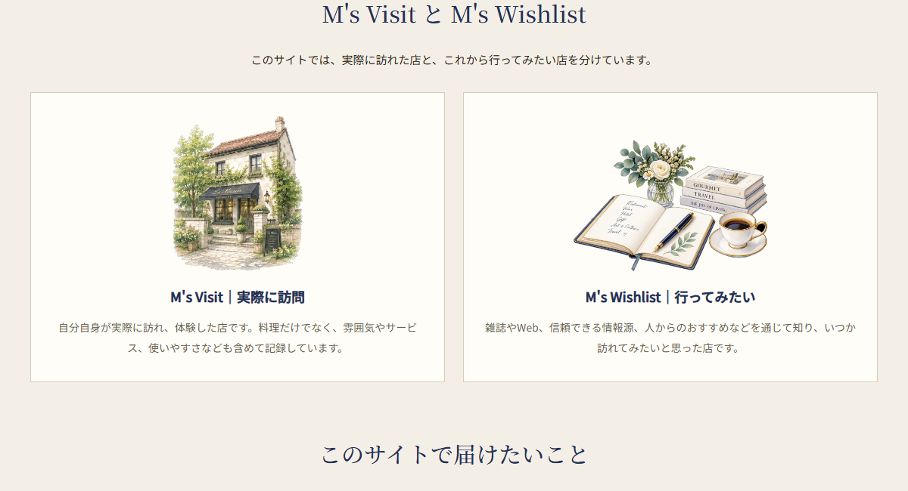
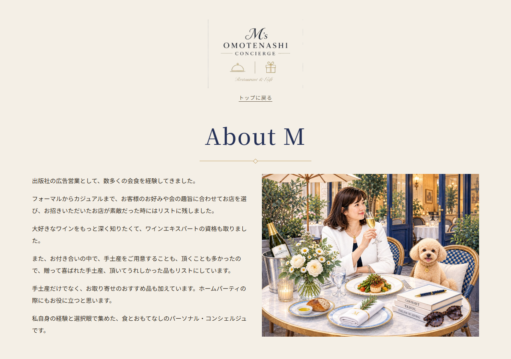

ADS 卒業制作
出版社の現場で培った目利きで選ぶ、
レストランとギフトのパーソナルガイド
頭の中の経験を、再利用できる知識にする。
口コミサイトではなく、M自身の選択眼を残すパーソナル・コンシェルジュ。
広告営業出身。エンジニアではない。実装は Cursor。主役は、何を知識として残すかという設計。
なぜ作ったか
思い出すだけでなく、呼び出せる形に
「どこか良い店を知らない？」
「この人への手土産は何がいい？」
会食・レストラン・手土産。判断基準は頭の中にあったが、その場で思い出すしかなかった。
メモや記憶を毎回たどる。接待、友人、犬連れ。場面に合う店を、条件で呼び出せなかった。
保存ではなく、あとから条件で呼び出せる知識へ。エリア／ジャンル／価格／フォーマル度／利用シーン／雰囲気／犬連れ。
グルメアプリが目的ではない。暗黙知を構造化し、条件で呼び出せるようにする。
作ったもの
見る・探すは公開。直すのは自分用

公開｜トップ ロゴ＋コピー＋Restaurant / Gift

公開｜Restaurant 条件・フリーワード・音声

公開｜Visit / Wishlist 店舗ステータス

公開｜About M 誰が、どんな基準で選ぶか
作ったもの｜設計
役割を分けて、目利きを価値にした
Visit＝実際に訪問。Wishlist＝行ってみたい。これは店舗のステータス。Choiceは特集で、ステータスではない。例：個室で接待、グラスでワイン、日持ちする手土産。
口コミの量では勝負しない。「誰が、どんな経験と基準で選ぶか」。出版社の広告営業で数多くの会食＋ワイン・贈答。「美味しいだけでなく、その場にちょうどいい」。
当初は Google フォーム。いまは非公開の /edit から入力・修正。来客向けから登録・直すを外した。アプリで直しても、シートに残る。
見た目は AI（Cursor）で作った。かわいい案から、上質・知的・ニュートラルへ。アイボリー／ネイビー／控えめなゴールド。男性にも使う前提。店を探す AI API とは別。
開発で工夫したこと
経験を、検索できる項目にした
条件・フリーワード・Web Speech の日本語音声。「恵比寿 和食」のような単語・条件はできる。文の意味理解は、まだしない。
「恵比寿で和食が食べたい」をAIが解釈 → 条件へ変換 → M自身の登録データから返す。世の中の店を聞かない。
AIを付けることから始めたのではない。先に、自分の経験を構造化した。
デモ
ここから、実演します
トップ → About M → Restaurant → 音声検索 → 1店舗
Gift は操作しない。見た目のAIと、店を探すAIは分ける。
今後
備忘録から、知識へ
条件検索・音声検索。無料で利用者とデータを増やす。予約・購入へ送客する土台。
- AI自然文検索・登録支援
- M's Choice 特集
- noteで読む → アプリで探す・比較 → 予約／EC
個別コンシェルジュ。法人の会食・贈答ナレッジ。「この相手ならこの店」「この場面ならこの手土産」。
資産はUIやコードではなく、経験・選定データ・蓄積された知識。
自分のための備忘録 → シートとアプリ → 暗黙知を再利用可能な知識へ
是非見ていただいて、お気づきの点やアイデアなどいただけましたら嬉しいです。
マコなり社長ともぜひコラボしたいです。よろしくお願いします。